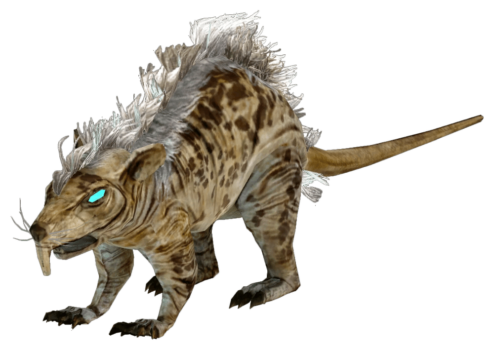
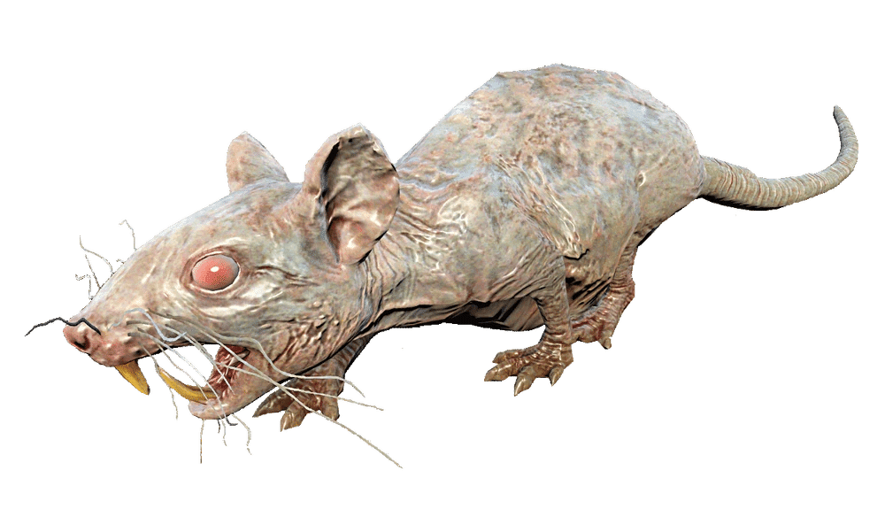

ジャイアントラット
DATE: 2025/11/5
Fallout
ジャイアントラットは、戦前に生息していた一般的な齧歯動物の巨大版です。
猫やチワワほどの大きさのものから、モールラットの親戚のように人間よりも大きいものまで、その強さは大きく異なります。
ラットは敵対的で、近づきすぎると戦闘を開始し、ラットが蔓延している地域での移動を大幅に遅らせます。
亜種
小型ラット
Fallout、Fallout 2、Fallout: Brotherhood of Steel
小型のラットでも犬に匹敵するほどの大きさです。
通常は大群で襲い掛かり、どこからともなく現れることもあります。
体色は黒、灰色、白など様々です。
ニューカリフォルニアやテキサスにも出現します。
ジャイアントラット

Fallout 3、Fallout: New Vegas、Fallout Tactics、Fallout: Brotherhood of Steel
これらのラットはモールラットや人間よりもさらに大きいです。
目立つ背骨が不気味な印象を与え、その大きさと力は経験の浅いウェイストランド人にとっては脅威となる可能性があります。
中西部、テキサス、モハビ・ウェイストランドで見られます。
Fallout 3版は最終リリースからカットされました。
ジャイアントラットの子

Fallout: New Vegas
大きい方はモールラットと同じくらいの大きさです。
放射線被曝の結果、小さい方よりも少し大きく、少し強くなりました。
モハビに生息する種は白い毛、青く光る目、薄茶色の体色を獲得し、通常の種よりも大きくなっています。
ラッドラット

Fallout: 4 Nuka-World、Fallout 76
ラッドラットはFallout 4のDLC「Nuka-World」とFallout 76に登場し、以前のゲームに登場するジャイアントラットに似ています。
感想
モールラットと比べると地味な存在で、何処に湧いたっけ・・っていう存在ですね。
じゃあなんで紹介したかって?
いやFallout76のロア用キャラの序盤で戦ったから書いたんだけど・・・何処で戦ったのかなぁ・・・ってくらい地味な存在で固有の料理も特に無かったはずです。多分…。
This article uses material from the “Endor” article on the Star Wars wiki at Fandom and is licensed under the Creative Commons Attribution-Share Alike License.
モールラットと比べると地味な存在で、何処に湧いたっけ・・っていう存在ですね。
じゃあなんで紹介したかって?
いやFallout76のロア用キャラの序盤で戦ったから書いたんだけど・・・何処で戦ったのかなぁ・・・ってくらい地味な存在で固有の料理も特に無かったはずです。多分…。
This article uses material from the “Endor” article on the Star Wars wiki at Fandom and is licensed under the Creative Commons Attribution-Share Alike License.
TAGS: #Fallout76#Fallout4#Fallout3#FalloutNV#ClassicFallout#Creature